Buildings 144
Sort
 Geisel Library1970 · San Diego
Geisel Library1970 · San Diego Stockholm Public Library1928 · Stockholm
Stockholm Public Library1928 · Stockholm Helsinki Central Library Oodi2018 · Helsinki
Helsinki Central Library Oodi2018 · Helsinki State Library of Queensland2006 · Brisbane
State Library of Queensland2006 · Brisbane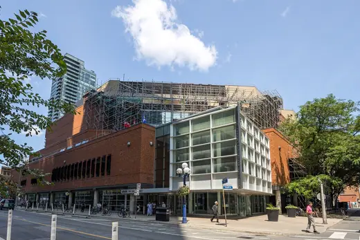
Toronto Reference Library1977 · Toronto Sant Antoni-Joan Oliver Library2007 · Barcelona
Sant Antoni-Joan Oliver Library2007 · Barcelona The Morgan Library & Museum1906 · New York
The Morgan Library & Museum1906 · New York Weston Library1940 · Oxford
Weston Library1940 · Oxford Berlin State Library (Haus Potsdamer Straße)1978 · Berlin
Berlin State Library (Haus Potsdamer Straße)1978 · Berlin Martin Luther King Jr. Memorial Library1972 · Washington
Martin Luther King Jr. Memorial Library1972 · Washington Rovaniemi Library1965 · Rovaniemi
Rovaniemi Library1965 · Rovaniemi Beinecke Rare Book & Manuscript Library1963 · New Haven
Beinecke Rare Book & Manuscript Library1963 · New Haven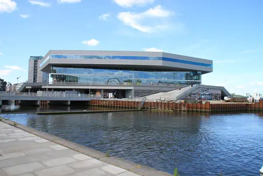
Dokk12015 · Aarhus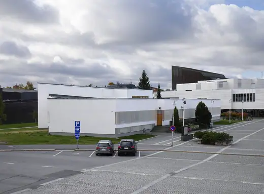
Seinäjoki Library1965 · Seinäjoki Bibliotheca Alexandrina2002 · Alexandria
Bibliotheca Alexandrina2002 · Alexandria Boekentoren1942 · Ghent
Boekentoren1942 · Ghent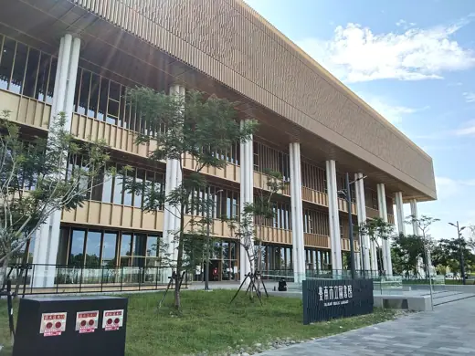
Tainan Main Public Library2021 · Tainan Jacob and Wilhelm Grimm Centre2009 · Berlin
Jacob and Wilhelm Grimm Centre2009 · Berlin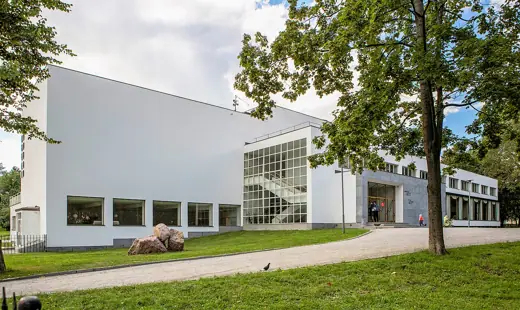
Vyborg Library1935 · Vyborg De Krook2017 · Ghent
De Krook2017 · Ghent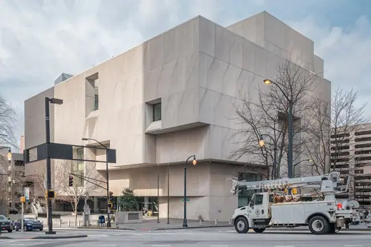
Atlanta Central Library1980 · Atlanta Central Library (UNAM)1956 · Mexico City
Central Library (UNAM)1956 · Mexico City Library of Birmingham2013 · Birmingham
Library of Birmingham2013 · Birmingham Calgary Central Library2018 · Calgary
Calgary Central Library2018 · Calgary National Library of Argentina1992 · Buenos Aires
National Library of Argentina1992 · Buenos Aires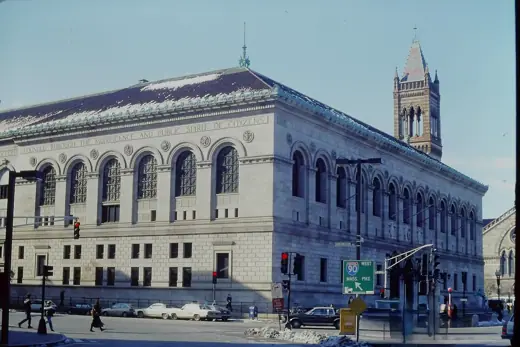
Boston Public Library, McKim Building1895 · Boston Lyndon Baines Johnson Library and Museum1971 · Austin
Lyndon Baines Johnson Library and Museum1971 · Austin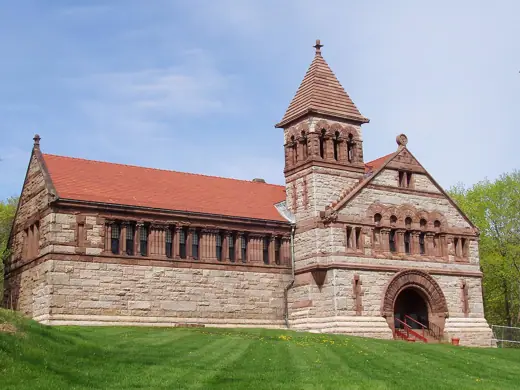
Ames Free Library1883 · Easton Jaume Fuster Library2005 · Barcelona
Jaume Fuster Library2005 · Barcelona National Library of Kosovo1982 · Pristina
National Library of Kosovo1982 · Pristina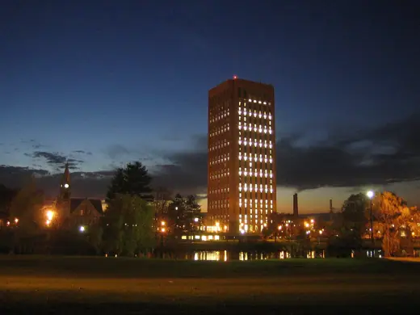
W. E. B. Du Bois Library1974 · Amherst Viipuri Library1935 · Vyborg
Viipuri Library1935 · Vyborg Library and Learning Center, Vienna University of Economics2013 · Vienna
Library and Learning Center, Vienna University of Economics2013 · Vienna Vasconcelos Library2006 · Mexico City
Vasconcelos Library2006 · Mexico City Virgilio Barco Library2001 · Bogotá
Virgilio Barco Library2001 · Bogotá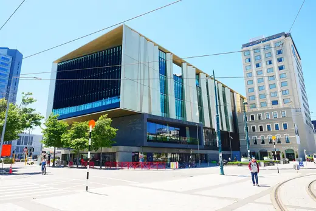
Tūranga (Christchurch Central Library)2018 · Christchurch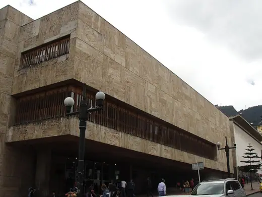
Biblioteca Luis Ángel Arango1958 · Bogotá State Library Victoria1913 · Melbourne
State Library Victoria1913 · Melbourne Biblioteca Gabriel García Márquez2022 · Barcelona
Biblioteca Gabriel García Márquez2022 · Barcelona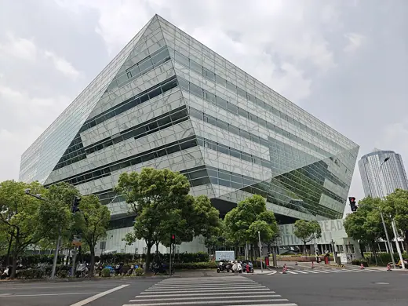
Shanghai Library East2022 · Shanghai Robarts Library1973 · Toronto
Robarts Library1973 · Toronto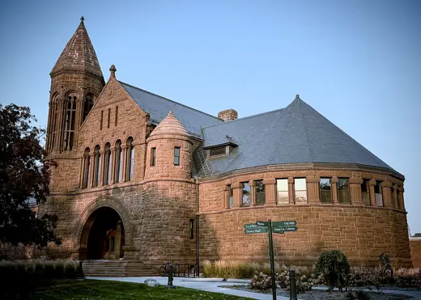
Billings Memorial Library1883 · Burlington